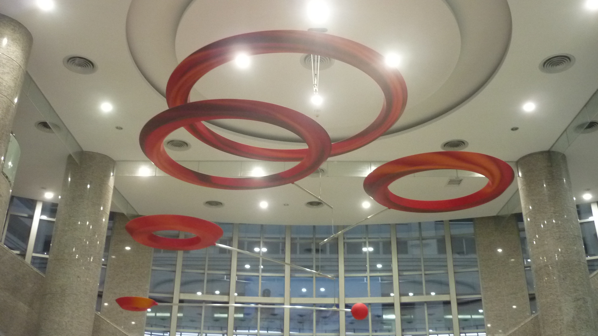
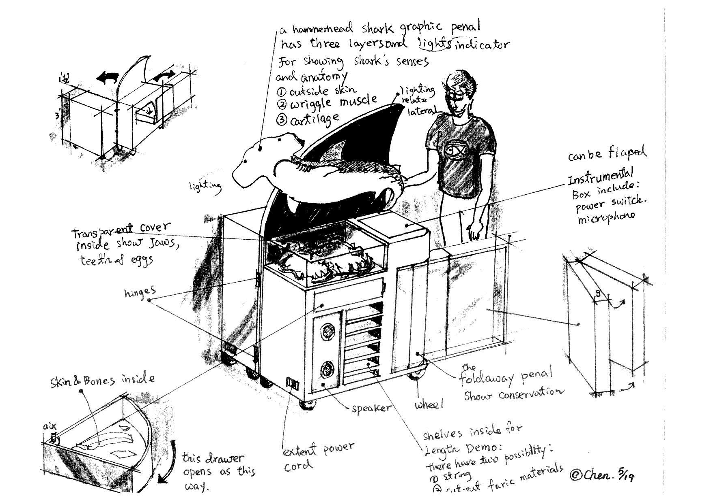
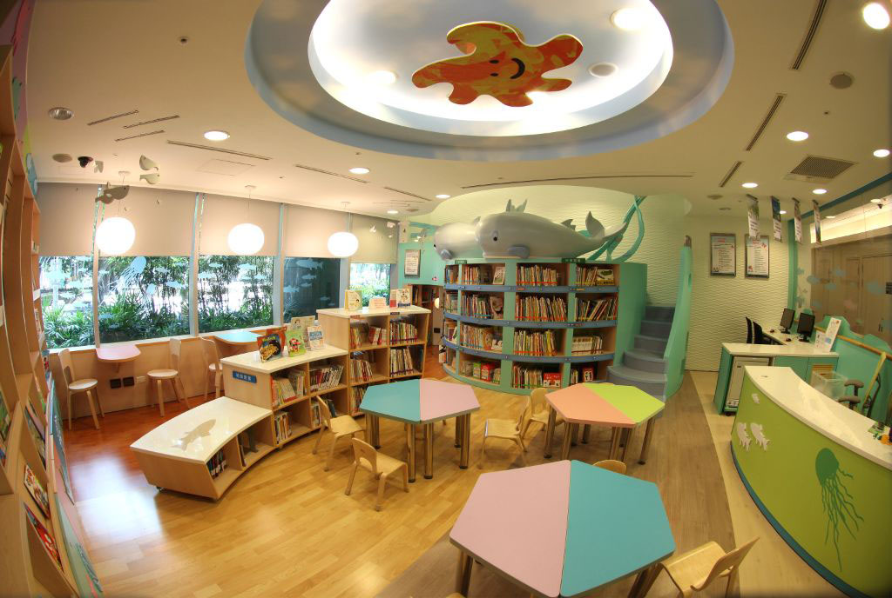
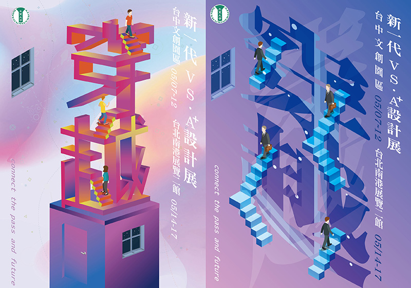
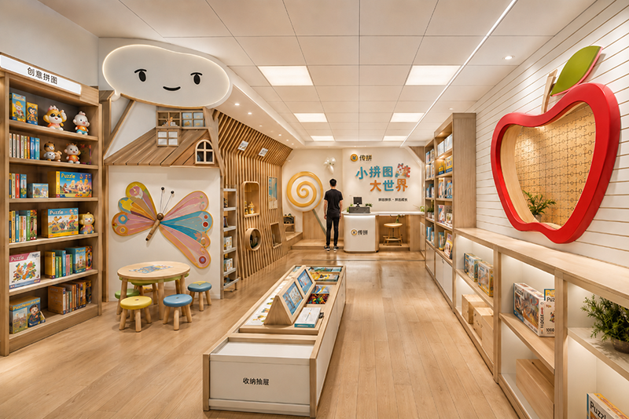

陳昌銘是大葉大學視覺傳達設計學系的退休教師，他在公共藝術設計領域展現其獨特的風格與視野。設計風格融合了自然與現代的元素，強調文化與自然的交融。他的作品常以鮮明的色彩、簡潔的線條及有機的形狀為特徵，透過這些設計元素，表達出和諧與美感。作品注重與環境的互動，經常在設計中考量作品與周遭建築、景觀的關係，力求達到與環境的和諧共生。此外，陳教授也經常運用科技與多媒體元素，增添作品的互動性與現代感。他的公共藝術作品不僅美化了公共空間，也激發了觀者的思考與情感共鳴。

鯊魚感官展示設計，是1997年在新英格蘭水族的可可島斧頭鯊魚的專案設計項目手繪稿，其目的在通過介紹斧頭鯊魚的五種主要感官（視覺、嗅覺、聽覺、味覺和電感應），來教育公眾。該項目使用互動裝置道具等，希望改變人們對鯊魚的恐懼認知，展示它們獨特的感官能力。通過展示鯊魚在海洋生態系統中的重要作用，促進鯊魚保護。項目包括多種互動元素，如虛擬現實展示鯊魚視覺、氣味擴散器展示嗅覺、聲音亭展示水下聽覺、關於味覺的測驗和電感應觸摸槽。通過加深對鯊魚的理解和欣賞，該項目鼓勵採取保護措施和保護努力。

以公共藝術的創作手法，設計出一個以兒童為主體的服務性空間，這樣的願望與挑戰，由財團法人信誼基金會所委託，在這兩件專案中都是以服務兒童義工之精神投入創作，布朗庫西曾說過：「當一個藝術家不再擁有童心的時候，也就不再是一個藝術家。」為創作之中心理念。因此，以兒童的遊戲場代表著雕塑形式和情境寓意，成為一個經過意念引喻的風景形式，有著許許多多表演情境之劇場幻影在創作中不斷的出現。在台大兒童醫療大樓家庭資源中心表現上，參照國外兒童醫院結合醫療照護資源的具體概念，醫院的空間應該是充滿童趣巧思的藝術空間，把醫院蒼白、冰冷的印象打破，兒童醫院本身成為是潛移默化的身體與生命教育的中心，不但有助身體復原，還能撫慰心靈與引導思考。

這篇設計理念以“穿越”為主題，象徵著在閒置舊空間中，展示現代設計多樣性的作品。作品以超現實的表現技法，展現平面空間的延伸。多數作品中運用了襯線字型、等距扁平化圖案、不合理空間以及漸層色彩等元素，串連出每張海報的同中求異之風格。這些元素共同營造出一個“穿越”故事的視覺情境，創造出認知上的價值，讓觀者墜入一個超現實的異次元空間中。 本系列作品是在疫情期間陸續創作，亦希望藉由作品來呈現人與人在空間中的疏離感。每個人都有自己的虛擬空間，各自在獨立空間中移動。表面上看似相聚在一起，但實際上彼此相距甚遠，這隱喻了疫情下社會的連結狀況。通過這些作品，我們希望能引發觀者對現實與虛擬、連結與疏離之間的思考。

AI技術在設計領域的應用，帶來了前所未有的變革和機遇。首先，AI能夠大幅提升設計效率。通過生成圖像、圖案和排版，設計師可以節省大量時間，將更多精力投入到創意和概念的開發中。其次，AI的強大數據分析能力，能夠深入了解使用者的需求和市場趨勢，為設計提供數據驅動的洞察，從而創造出更具吸引力和功能性的作品。AI還能在設計過程中提供智能建議，從色彩搭配到構圖布局，甚至是風格的選擇，AI都能根據大量優秀設計的樣本進行學習，給出最佳方案，提升作品的質量。對於初學者來說，AI工具提供的即時反饋和教學功能，能夠快速提升設計技能，縮短學習曲線。AI技術的應用，還使得個性化設計成為可能。通過分析用戶的偏好和行為，AI可以生成量身定制的設計方案，滿足個性化需求，提升用戶體驗。總之，AI的引入，不僅提升了設計效率和質量，還為設計師創造了更多創意空間，推動設計行業的持續創新和發展。回頂端
